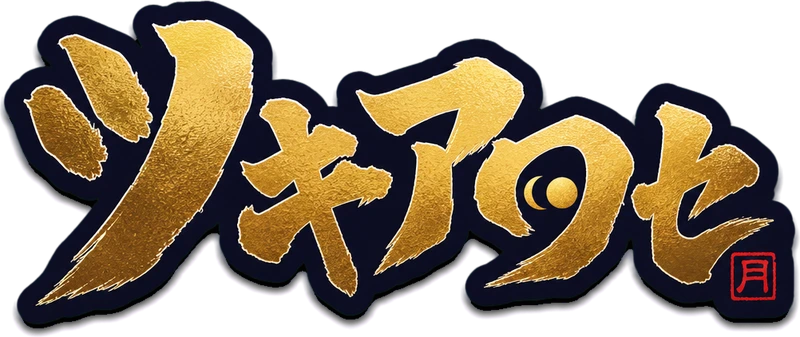
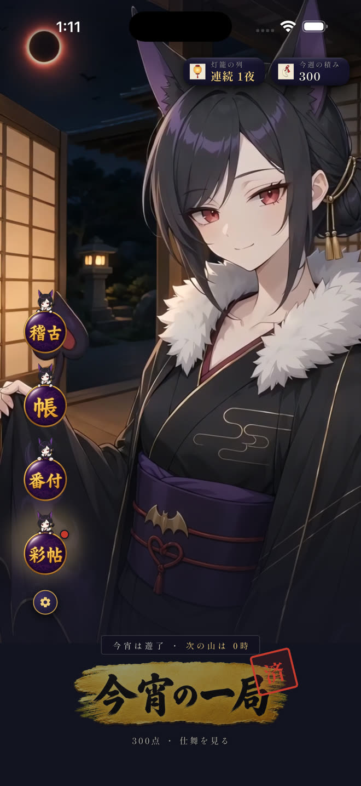
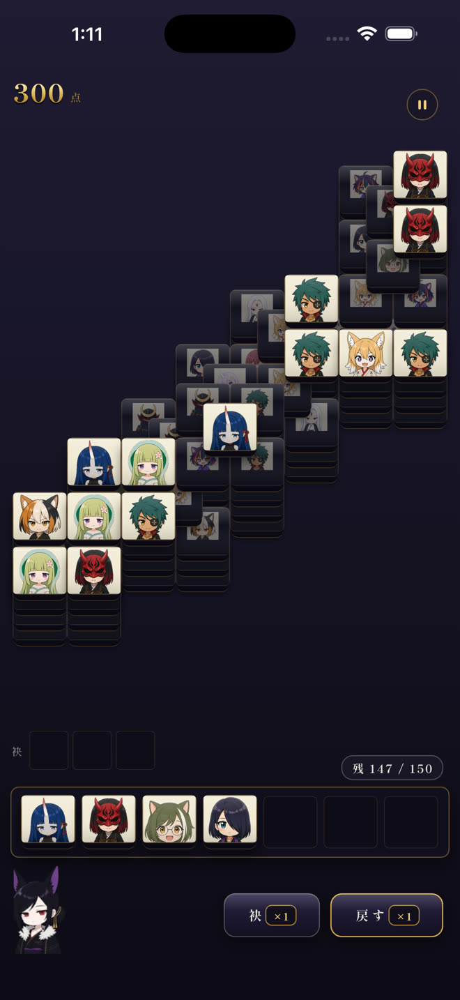
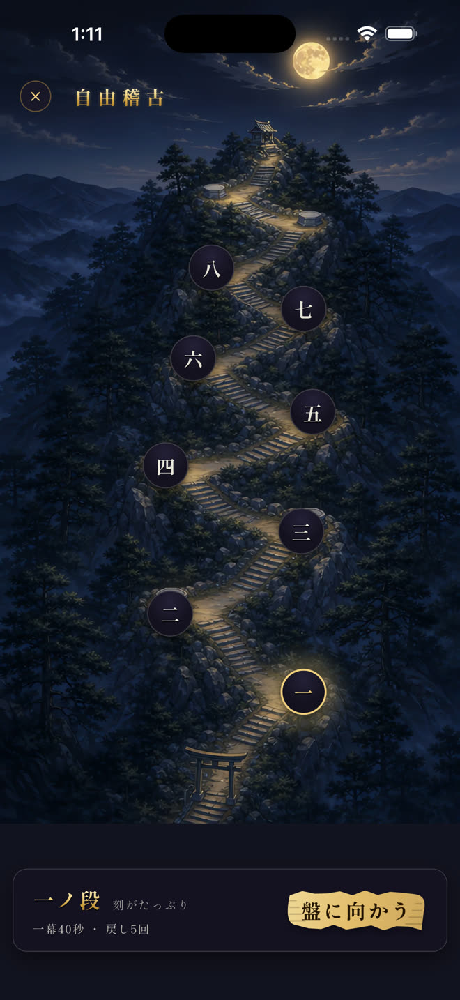
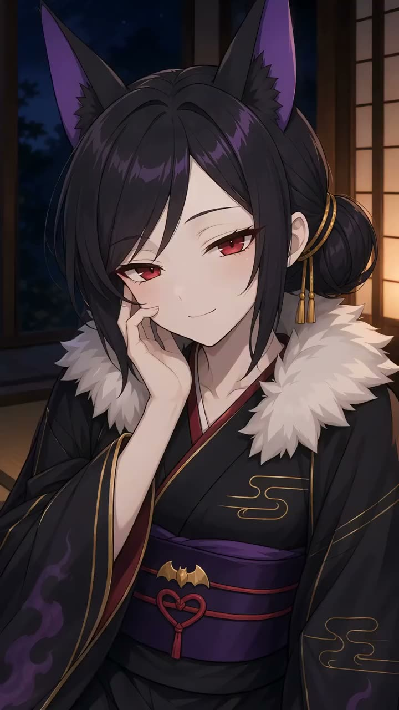
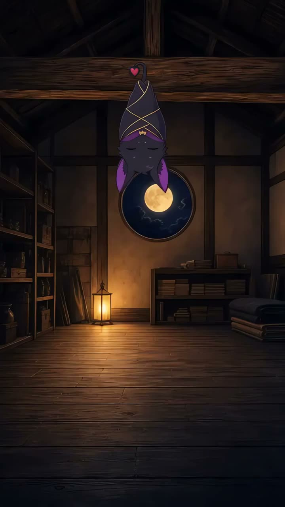
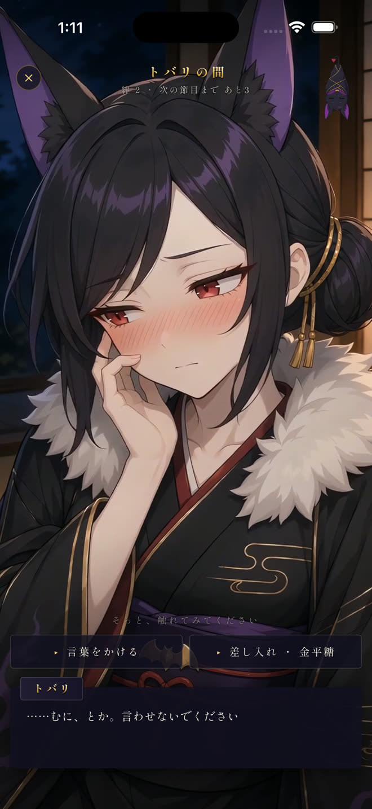
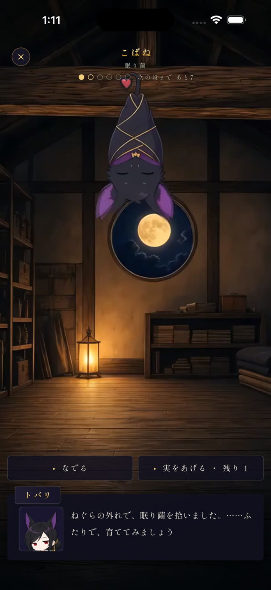
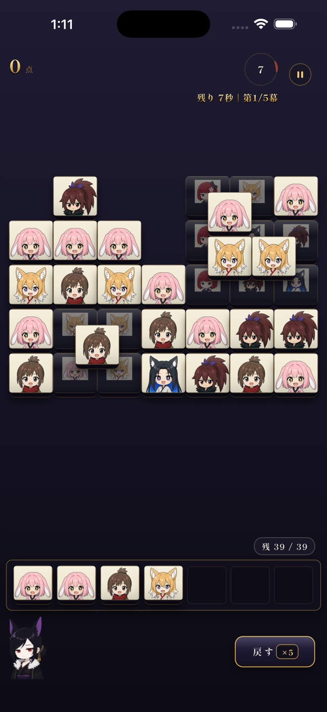

月夜の絵あわせ
月夜にそろえる、
一日一局の絵あわせ。
同じ絵札を三枚そろえて、山を崩す。夜の主トバリと、ねぐらで眠る小さな眷属が待っています。
課金なし広告なし登録不要

同じ絵札を三枚そろえて、山を崩す。夜の主トバリと、ねぐらで眠る小さな眷属が待っています。
読むより、崩すほうが早い遊びです。隣の小さな山は、この場でそのまま遊べます。
灯籠の参道、月光の札山、札を置く指先。幕開きの映像を、音つきでそのままご覧いただけます。

詰所
今宵の盤
稽古の山道その夜の山は、遊ぶ人みな同じ形。毎晩一分、月夜の盤に向かう静かな日課です。
一夜に一局。崩し切った札の数で採点します。「戻す」「袂」の助けは、使えば点が下がります。
一ノ段から八ノ段まで、段ごとに山の形が変わります。何度でも通えて、ベストの点が残ります。
週ごとの場所で成績を競えます。参加は任意。雅号を名乗った方だけが記録されます。
夜の主、トバリを愛でる部屋です。なでると表情が変わり、声で応えます。一日一度、言葉をかけると返事が返ります。
絵に触れても、表情が変わります

小さな眷属、こばねの部屋です。なでる、実をあげる。世話を重ねると姿が変わります。夜には、寝かしつけに立ち会えます。
その先の姿は、ねぐらで

四十一種の絵札、衣裳、覚え、絵日記が少しずつ増えていきます。まだ見ぬ札は、暗い影のまま棚で待っています。
遊んだ夜は暦に灯り、灯籠の列が伸びていきます。


